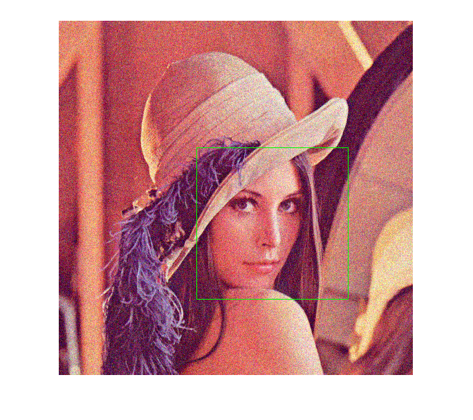

DBT Face Detection
Sources:
Contents
Create detector
xmlfile = fullfile(mexopencv.root(),'test','lbpcascade_frontalface.xml'); % lbpcascade_frontalface_improved.xml params = {}; try detector = cv.DetectionBasedTracker(xmlfile, xmlfile, params{:}); catch ME disp('Note: This sample only works for UNIX or VS2013+'); rethrow(ME); end
Setup
% set up camera cap = createVideoCapture([], 'lena'); pause(1); assert(cap.isOpened(), 'Cannot open video stream from camera'); % set up display frame = cap.read(); assert(~isempty(frame), 'Failed to read frame'); hImg = imshow(frame);
Main loop
assert(detector.run(), 'Detector initialization failed'); while ishghandle(hImg) % grab frame frame = cap.read(); if isempty(frame), break; end % detect faces gray = cv.cvtColor(frame, 'RGB2GRAY'); detector.process(gray); faces = detector.getObjects(); % draw results for i=1:numel(faces) frame = cv.rectangle(frame, faces{i}, 'Color',[0 255 0]); end % update set(hImg, 'CData',frame); drawnow; end detector.stop(); cap.release();